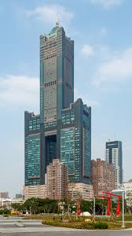

東帝士 85 大樓 · Tuntex Sky Tower
台灣第一高樓（1997–2004）· 至今仍是高雄最高建築 · 港都永恆的地標

1980 年代末期，台灣經濟正值起飛階段，高雄作為國際商港亟需現代化商業空間。東帝士集團看準高雄轉型契機，於 1989 年 啟動 85 大樓開發計畫，委託以台北 101 聞名的 李祖原建築師事務所 操刀設計，目標是打造台灣第一高樓，宣示高雄邁向國際城市的決心。
興建過程中遭遇 1997 年亞洲金融風暴，東帝士集團資金調度一度陷入困境，工程數次停擺。然而憑藉集團創辦人 陳由豪 的堅持與銀行團的支持，大樓最終克服萬難順利完工。1997 年落成時以 378 公尺的高度躍居台灣第一，直至 2004 年台北 101 完工後退居第二，但至今仍是 高雄最高的摩天大樓。
東帝士集團啟動開發，委託李祖原建築師事務所設計
正式動工，採用鋼骨結構與玻璃帷幕
完工啟用，成為台灣第一高樓，樓高 378 公尺
74 樓觀景台正式對外開放，吸引大量國內外遊客
台北 101 完工，85 大樓退居台灣第二高樓
君鴻酒店歇業，大樓進行部分空間用途調整
仍為高雄最高建築，最具代表性的城市地標
85 大樓最標誌性的特色是其「高」字造型——由兩個矩形量體交錯堆疊而成。李祖原建築師巧妙地將漢字結構融入摩天大樓設計，既呼應城市名稱「高雄」，也傳達「向上發展、追求卓越」的精神。這種融合 東方文化符號 與 現代摩天大樓 的設計手法，後來也沿用於台北 101 的設計之中。
建築採用 鋼骨結構 搭配 深色玻璃帷幕，總用鋼量達數萬噸。結構工程充分考慮高雄的颱風與地震風險，採用 韌性抗彎矩構架 系統，能承受強風與地震力。大樓裝設的 調諧質量阻尼器（TMD）是台灣最早應用於摩天大樓的防震系統之一，有效降低風力搖晃。
樓層功能分布
工程挑戰
85 大樓的落成不僅改變了高雄的天際線，更對城市的商業版圖與觀光產業產生深遠影響。大樓內的 君鴻酒店（原金典酒店）曾是高雄頂級飯店代表，吸引眾多國際商務旅客；74 樓觀景台累計參觀人次突破數百萬，是國內外旅客造訪高雄的必遊景點。
三多商圈 因 85 大樓的帶動而快速發展，新光三越、遠東 SOGO 等百貨陸續進駐，形成高雄最繁華的商業核心之一。大樓周邊房地產價格在完工後十年內上漲超過 200%，可見其對區域經濟的強大拉動力。
在文化層面，85 大樓早已超越單純建築物。每年 跨年煙火秀 以 85 大樓為核心，搭配高雄港灣景觀吸引數十萬人朝聖。大樓多次出現在電影《痞子英雄》、電視劇及音樂 MV 中，成為高雄無可取代的視覺符號。
360 度俯瞰高雄港、壽山、旗津及市區全景；傍晚造訪可一次飽覽日落與夜景
入夜後高雄港燈火與星空交融，觀景台大型落地窗視野無遮蔽
三多路與自強路口拍攝大樓全貌；成功路橋捕捉大樓與港區同框
每年 12/31 以 85 大樓為核心的港都煙火秀，最佳觀賞點為高雄展覽館前廣場
步行 5 分鐘，南豐滷肉飯、岡山羊肉等在地美食匯集
新光三越、遠東 SOGO，購物娛樂一應俱全